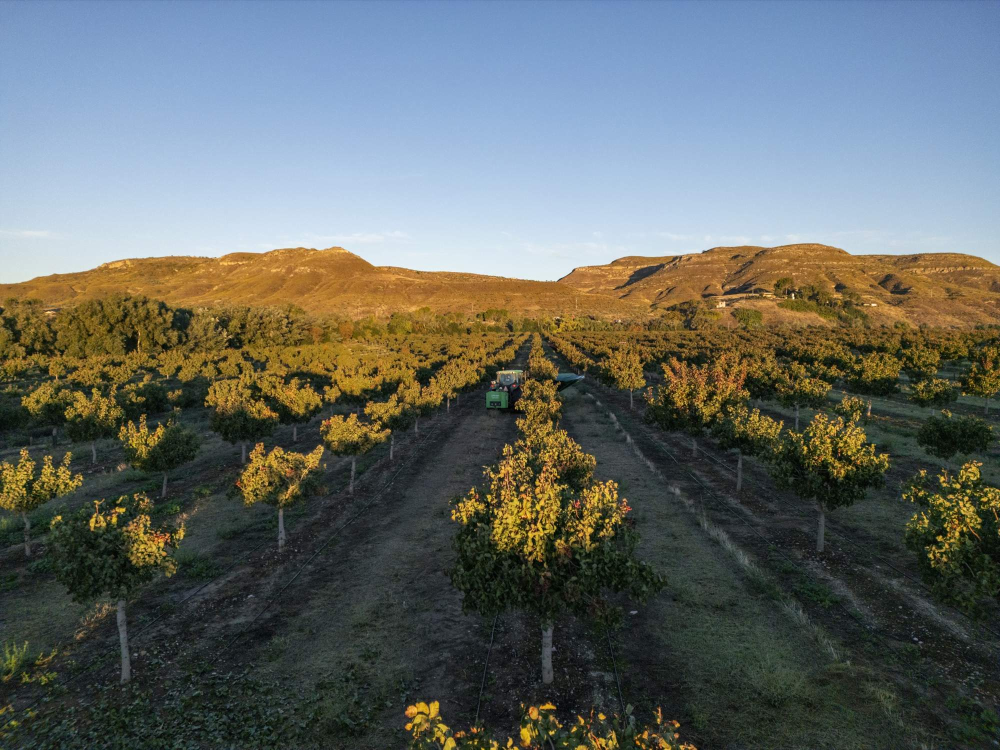
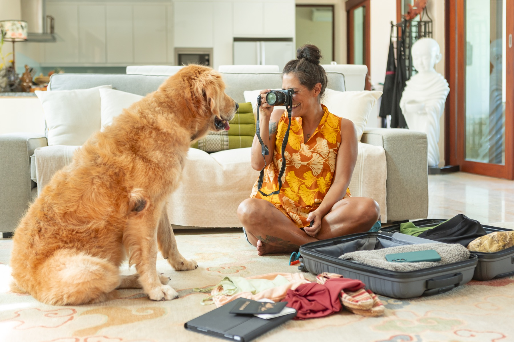

El territorio
Una mirada a los paisajes, caminos y pueblos que conectan la ruta, con atención a las distintas épocas del año.

PROPUESTA CREATIVA · FITUR 2027
Una campaña visual para que los viajeros descubran el territorio a través de sus paisajes, alojamientos y personas.
Explorar la propuesta ↘Proponemos producir una campaña de fotografía y vídeo alrededor de una zona prioritaria de Navarra, conectando naturaleza, alojamientos y experiencias con las personas que les dan vida.
Un posible punto de partida es el Pirineo navarro. La ruta definitiva y los objetivos se definirían junto al equipo de VisitNavarra y los agentes locales.
Una mirada a los paisajes, caminos y pueblos que conectan la ruta, con atención a las distintas épocas del año.
Fotografía y vídeo de alojamientos, hospitalidad, gastronomía y detalles que ayudan al viajero a imaginar su visita.
Guías, anfitriones y productores locales muestran experiencias reales y aportan el conocimiento del lugar.

Imagen de portafolio · ubicación no identificada como Navarra03 / CERCA DEL TERRITORIO
Estamos en Bilbao, cerca de Navarra. Podemos desplazarnos al territorio y trabajar allí durante el tiempo que requiera el proyecto, en colaboración con alojamientos, guías, productores y equipos locales.
VisitNavarra puede recibir fotografías y vídeo para su propia campaña, o encargar el desarrollo creativo y la producción completa. La duración, los formatos y las condiciones de uso se acuerdan según sus necesidades. Juan conserva la autoría y la propiedad de su trabajo.
Ver el trabajo de Juan ↗Promoción del destino
Imágenes y vídeo para presentar una ruta y sus experiencias.
Empresas locales
Material acordado para que alojamientos y colaboradores puedan comunicar su oferta.
Mercado profesional
Recursos para presentaciones y acciones dirigidas a agencias y operadores.
Propuesta creativa basada en líneas públicas de promoción de Navarra. No representa un encargo confirmado ni promete resultados de audiencia.
FITUR 2027 · PROPUESTA DE REUNIÓN
Una conversación para conocer qué territorio y qué experiencias quiere impulsar VisitNavarra.
Ver portafolio ↗